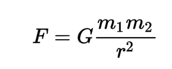

Celestial Body Simulator Explanation:
Adding a Planet:
To add a planet you must enter the following information:
- Orbital radius to show the initial distance away from the center of the canvas
- Planet speed to show how fast the planet is moving forward to keep the planet in motion
- The mass or weight of the planet to see how affected by other planets would be
- Planet radius for how big the planet will appear and some colour options so you can identify the planet
The Physics:
- The distance between 2 celestial objects is calculated through the pythagorean theorem
- Next, we use the Newton's law of universal gravitation which is shown through:

The F is the force is calculated by finding the two masses m1 and m2 and dividing it by the distance between them. Then you multiply it by the gravitational constant to find the force.
The Formula is a statement that any particle of matter in the universe attracts any other with a force varying directly as the product of the masses and inversely as the square of the distance between them.
- The distance is converted from pixels to billions of kilometers throughout the formula
- Then the speed of the simulation is checked from the user input and calculated into the program